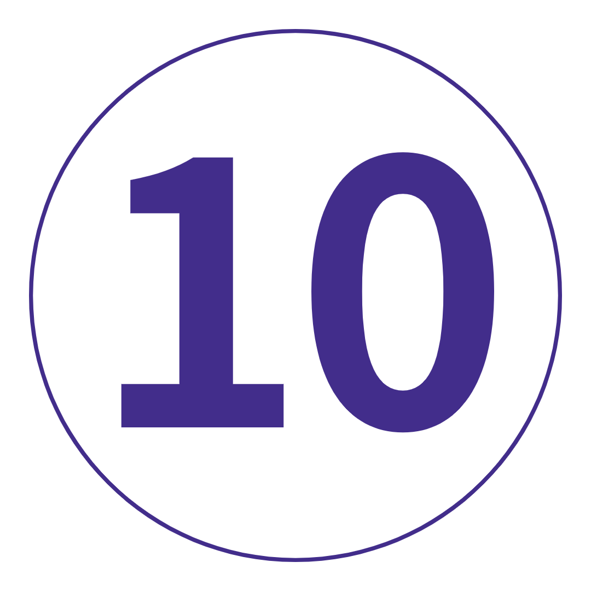

8 일
3 국가
1 인당
US $ 1,153.00 부터

여행 코드: EEWJCC-1
여행 노트 다운로드-
날짜 및 가격 확인
2021년 11월 11월 27일 토 ~ 12월 4일 토 윈터 스칸디 익스프레스 2021-22 US$1,256.00 2021년 12월 12월 11일 토 ~ 12월 18일 토 윈터 스칸디 익스프레스 2021-22 US$1,256.00 2022년 2월 2월 12일 토 ~ 2월 19일 토 윈터 스칸디 익스프레스 2021-22 US$1,153.00
여행개요 |
|
 밤 밤 |
 식사 |
 호스텔플러스 호스텔플러스 |
 최대 인원 최대 인원 |
 여행 가이드 여행 가이드 |
|
| 시 작 | 18 : 00 코펜하겐 |
| 종 료 | 09 : 00 스톡홀름 (또는 17 : 00 코펜하겐) |
여행 개요
지도
나를 위한 여행인가? 매우 훌륭한. 트렌디. 강화.
면책 조항: 이것은 일반적인 유럽 윈터 여행이 아닙니다. 이 8일 간의 모험은 트렌디한 도시, 놀라운 풍경, 기발한 문화 및
스칸디나비아와 같은 곳에서만 제공할 수 있는 모든 종류의 숨겨진 보석으로 가득 차 있습니다. 스키 타기? 네. 사우나? 물론이지.
소금에 절인 청어? 글쎄요... 코펜하겐에서 오슬로까지, 스톡홀름을 거쳐 덴마크 수도로 돌아오는 왕복 - 우리는 이 스칸디나비아 도시가 제공하는
최고의 것을 발견하고 그 길을 따라 자신을 발견할 것입니다. 안에 있냐?
여행 일정
-
 덴마크 코펜하겐
맛있는 음식, 매혹적인 문화, 지금까지 본 것 중 가장 매력적인 사람들로 가득한 기이한 도시 – 스칸디나비아에 오신 것을 환영합니다! 멋진 코펜하겐에 도착하여 짐을 버리고 갱단을 만나보세요. 우리는 혼합된 무리일 수 있지만 우리는 모두 함께 있습니다. 워킹 투어에 참여해 보세요. 티볼리 정원, 시청, 니하운, 덴마크 국립 박물관 등을 둘러보고 밝은 타운하우스를 보기 위해 운하를 따라 산책을 즐겨보세요. 이 도시가 세계에서 가장 살기 좋은 도시 중 하나로 계속 떠오르는 이유를 곧 알게 될 것입니다. 그럼 오늘밤? 저녁 식사가 우리에게 있습니다. 건배!
덴마크 코펜하겐
맛있는 음식, 매혹적인 문화, 지금까지 본 것 중 가장 매력적인 사람들로 가득한 기이한 도시 – 스칸디나비아에 오신 것을 환영합니다! 멋진 코펜하겐에 도착하여 짐을 버리고 갱단을 만나보세요. 우리는 혼합된 무리일 수 있지만 우리는 모두 함께 있습니다. 워킹 투어에 참여해 보세요. 티볼리 정원, 시청, 니하운, 덴마크 국립 박물관 등을 둘러보고 밝은 타운하우스를 보기 위해 운하를 따라 산책을 즐겨보세요. 이 도시가 세계에서 가장 살기 좋은 도시 중 하나로 계속 떠오르는 이유를 곧 알게 될 것입니다. 그럼 오늘밤? 저녁 식사가 우리에게 있습니다. 건배!
키워드 공식 만찬 + 코펜하겐의 도보 여행 -
 코펜하겐
의심스러울 때는 현지인처럼 하세요. 자전거를 빌려서 두 바퀴로 이 한적한 스칸디족 도시를 탐험해보세요. Nyhavn의 해안가를 따라 걸어보세요. 북유럽 요리의 스모가스보드를 즐겨보세요. 깨끗한 운하에 몸을 담그십시오(옷은 선택 사항). 도시의 번성하는 수제 맥주 현장을 발견하십시오. 또는 많은 박물관 중 한 곳에서 하루를 보내십시오. Tivoli Gardens는 세계에서 두 번째로 오래된 테마파크일 뿐만 아니라 가장 아름답습니다(저희에 따르면). 시간을 잘 맞추면 거대한 의자 그네 꼭대기에서 일몰을 감상할 수 있습니다. 큐: 소름이 돋는다. 오늘 밤 저녁 식사를 위해 Gasoline Grill로 가십시오. '표지로 책을 판단하지 말라'는 뜻입니다.
코펜하겐
의심스러울 때는 현지인처럼 하세요. 자전거를 빌려서 두 바퀴로 이 한적한 스칸디족 도시를 탐험해보세요. Nyhavn의 해안가를 따라 걸어보세요. 북유럽 요리의 스모가스보드를 즐겨보세요. 깨끗한 운하에 몸을 담그십시오(옷은 선택 사항). 도시의 번성하는 수제 맥주 현장을 발견하십시오. 또는 많은 박물관 중 한 곳에서 하루를 보내십시오. Tivoli Gardens는 세계에서 두 번째로 오래된 테마파크일 뿐만 아니라 가장 아름답습니다(저희에 따르면). 시간을 잘 맞추면 거대한 의자 그네 꼭대기에서 일몰을 감상할 수 있습니다. 큐: 소름이 돋는다. 오늘 밤 저녁 식사를 위해 Gasoline Grill로 가십시오. '표지로 책을 판단하지 말라'는 뜻입니다.
키워드 아침밥 -
 코펜하겐에서 노르웨이 오슬로까지
거짓말이 아닙니다. 오늘은 이른 시작입니다. 이제 자리를 잡고 노래를 부르고 여행 친구를 더 잘 알게 되며 전문 여행 리더가 스칸디나비아의 재미있는 사실로 머리를 가득 채울 수 있습니다. 아, 그리고 창가 자리에 앉으십시오. Øresund Bridge의 전망은 일생에 한 번입니다. 왕궁, 국회의사당, 오슬로 대성당, 국립극장 등을 둘러보며 도보 여행을 떠나보세요. 그때? 우리는 이곳이 싸지 않다는 것을 알고 있습니다. 그래서 저녁은 오늘밤 우리에게 달려 있습니다. 나중에 감사합니다.
코펜하겐에서 노르웨이 오슬로까지
거짓말이 아닙니다. 오늘은 이른 시작입니다. 이제 자리를 잡고 노래를 부르고 여행 친구를 더 잘 알게 되며 전문 여행 리더가 스칸디나비아의 재미있는 사실로 머리를 가득 채울 수 있습니다. 아, 그리고 창가 자리에 앉으십시오. Øresund Bridge의 전망은 일생에 한 번입니다. 왕궁, 국회의사당, 오슬로 대성당, 국립극장 등을 둘러보며 도보 여행을 떠나보세요. 그때? 우리는 이곳이 싸지 않다는 것을 알고 있습니다. 그래서 저녁은 오늘밤 우리에게 달려 있습니다. 나중에 감사합니다.
키워드 아침밥 + 공식 만찬 + 오슬로의 도보 여행 -
 오슬로
겨울에 온 이유가 있습니다. 그리고 오늘이 노르웨이 스키 리조트의 반짝이는 눈 덮인 마법을 모두 경험할 수 있는 기회입니다. 슬로프에서 하루 종일 등록하고 파쇄하십시오. 마을에 머물다? 걱정 마. 역사 애호가는 Akershus Fortress를 확인해야 합니다. 문화 마귀는 지역 사우나를 사냥할 수 있습니다(그들은 어디에나 있습니다). 예술 애호가라면 비겔란 공원을 놓칠 수 없습니다. 그리고 미식가? 트렌디한 Grünerløkka로 가서 마음껏 먹어보세요. 눈이 내린다면 버킷 리스트에서 '오페라 하우스 위에서 스키 타기'를 선택하십시오. 아니면 Spikersuppa로 가서 야간 아이스 스케이팅을 즐겨보세요. 이것은 당신이 쫓던 윈터 분위기입니다.
오슬로
겨울에 온 이유가 있습니다. 그리고 오늘이 노르웨이 스키 리조트의 반짝이는 눈 덮인 마법을 모두 경험할 수 있는 기회입니다. 슬로프에서 하루 종일 등록하고 파쇄하십시오. 마을에 머물다? 걱정 마. 역사 애호가는 Akershus Fortress를 확인해야 합니다. 문화 마귀는 지역 사우나를 사냥할 수 있습니다(그들은 어디에나 있습니다). 예술 애호가라면 비겔란 공원을 놓칠 수 없습니다. 그리고 미식가? 트렌디한 Grünerløkka로 가서 마음껏 먹어보세요. 눈이 내린다면 버킷 리스트에서 '오페라 하우스 위에서 스키 타기'를 선택하십시오. 아니면 Spikersuppa로 가서 야간 아이스 스케이팅을 즐겨보세요. 이것은 당신이 쫓던 윈터 분위기입니다.
키워드 아침밥
추가 옵션 노르웨이 스키: 840 NOK부터 -
 오슬로
탑데커는 임무를 통제하기 위해 더 많은 시간을 탐색해야 합니다. 권한이 부여되었습니다. 오늘은 100% 당신에게 달려 있습니다. 그러나 몇 가지 제안이 필요하면 Bygdøy(일명 박물관 섬)로 가는 선택적인 여행을 떠나십시오. 우리는 Kon-Tiki Museum, Fram Polar Ship, Norsk Folkemuseum 및 Viking Ship Museum(obvs)에 대해 이야기하고 있습니다. 원하는 시간에 페리를 타고 오슬로 항구로 돌아가세요. 그런 다음 현지에서 맛있는 음식을 먹거나 불법 버거에서 지금까지 먹어본 것 중 최고의 버거를 찾아보세요. 기간.
오슬로
탑데커는 임무를 통제하기 위해 더 많은 시간을 탐색해야 합니다. 권한이 부여되었습니다. 오늘은 100% 당신에게 달려 있습니다. 그러나 몇 가지 제안이 필요하면 Bygdøy(일명 박물관 섬)로 가는 선택적인 여행을 떠나십시오. 우리는 Kon-Tiki Museum, Fram Polar Ship, Norsk Folkemuseum 및 Viking Ship Museum(obvs)에 대해 이야기하고 있습니다. 원하는 시간에 페리를 타고 오슬로 항구로 돌아가세요. 그런 다음 현지에서 맛있는 음식을 먹거나 불법 버거에서 지금까지 먹어본 것 중 최고의 버거를 찾아보세요. 기간.
키워드 아침밥
추가 옵션 바이킹 선박 박물관 방문: NOK 100부터 / Kon-Tiki 박물관 방문: NOK 12시부터 / Fram Polar Ship 방문: 80 NOK부터 -
 스웨덴 스톡홀름에서 오슬로
미트볼과 ABBA 그 이상(둘 다 많이 있음) – 우리는 상징적인 Scandi 도시 스톡홀름으로 가는 길을 만들고 있습니다. 재미있는 사실: 이 곳은 멜라렌 호수가 발트해로 흘러가는 14개의 섬으로 이루어진 군도에 세워졌습니다. 멋지죠? 도보 여행을 통해 감라스탄(Gamla Stan), 국회의사당(Parliament House), 리다르홀멘 교회(Riddarholmen Church), 왕궁(Royal Palace)을 둘러보고 나머지는 여러분의 몫입니다. 예산이 허락한다면 Restaurant Pelikan은 군침이 도는 전통 음식을 자랑합니다. 아니면 사람들을 위한 미트볼(Meatballs for the People)로 가십시오.
스웨덴 스톡홀름에서 오슬로
미트볼과 ABBA 그 이상(둘 다 많이 있음) – 우리는 상징적인 Scandi 도시 스톡홀름으로 가는 길을 만들고 있습니다. 재미있는 사실: 이 곳은 멜라렌 호수가 발트해로 흘러가는 14개의 섬으로 이루어진 군도에 세워졌습니다. 멋지죠? 도보 여행을 통해 감라스탄(Gamla Stan), 국회의사당(Parliament House), 리다르홀멘 교회(Riddarholmen Church), 왕궁(Royal Palace)을 둘러보고 나머지는 여러분의 몫입니다. 예산이 허락한다면 Restaurant Pelikan은 군침이 도는 전통 음식을 자랑합니다. 아니면 사람들을 위한 미트볼(Meatballs for the People)로 가십시오.
키워드 아침밥 -
 스톡홀름
빠른 계산: 오늘이 마지막 하루입니다. 그래서 F-about하지 말고 탐험을 시작하십시오! 카네불러를 타고 길을 걷고 감라스탄(Gamla Stan)의 부티크 매장을 둘러보세요. Stortorget에서 사진을 찍고 궁전에서 근위병 교대식을 지켜보세요. 페리를 타고 Djurgården으로 건너가 Vasa 박물관(필수), Skansen 박물관 및 ABBA 박물관을 방문하세요. 또는 현지 분위기와 트렌디한 카페를 위해 매우 힙한 쇠데르말름(Södermalm)으로 향하세요. 원하는 경우 시청 가이드 투어도 제공됩니다. 무엇을 선택하든 오늘 저녁 그룹 저녁 식사 시간에 늦지 않도록 하십시오. 우리는 이 Scandi 모험에 합당한 가치를 선사할 것입니다!
스톡홀름
빠른 계산: 오늘이 마지막 하루입니다. 그래서 F-about하지 말고 탐험을 시작하십시오! 카네불러를 타고 길을 걷고 감라스탄(Gamla Stan)의 부티크 매장을 둘러보세요. Stortorget에서 사진을 찍고 궁전에서 근위병 교대식을 지켜보세요. 페리를 타고 Djurgården으로 건너가 Vasa 박물관(필수), Skansen 박물관 및 ABBA 박물관을 방문하세요. 또는 현지 분위기와 트렌디한 카페를 위해 매우 힙한 쇠데르말름(Södermalm)으로 향하세요. 원하는 경우 시청 가이드 투어도 제공됩니다. 무엇을 선택하든 오늘 저녁 그룹 저녁 식사 시간에 늦지 않도록 하십시오. 우리는 이 Scandi 모험에 합당한 가치를 선사할 것입니다!
키워드 아침밥 + 공식 만찬 + 스톡홀름 도보 여행
추가 옵션 스톡홀름 시청 가이드 투어: 90 SEK부터 / 바사 박물관 방문: 130 SEK부터 -
 스톡홀름에서 덴마크 코펜하겐
스웨덴에 작별 인사를 하십시오. 우리는 경치 좋은 길을 덴마크로 돌아갑니다. 신호: 며칠 동안 서리로 덮인 호수와 눈 덮인 숲. 그 사교를 교환하고 작별 인사를 할 시간입니다(울지 않음). 그러나 아무도 모험이 끝나야 한다고 말하지 않았습니다. 서유럽은 돌 던지기일 뿐입니다...
스톡홀름에서 덴마크 코펜하겐
스웨덴에 작별 인사를 하십시오. 우리는 경치 좋은 길을 덴마크로 돌아갑니다. 신호: 며칠 동안 서리로 덮인 호수와 눈 덮인 숲. 그 사교를 교환하고 작별 인사를 할 시간입니다(울지 않음). 그러나 아무도 모험이 끝나야 한다고 말하지 않았습니다. 서유럽은 돌 던지기일 뿐입니다...
키워드 아침밥
포함된 항목
|
포함된 경험 |
숙소 |
교통 |
|
코펜하겐의 도보 여행 |
호스텔에서 7박 |
전자 제품 충전을 위한 파워포인트를 포함하여 무료 Wi-Fi와 에어컨이 완비된 현대적인 코치 |
|
선택 활동 |
|
- 바이킹 선박 박물관 방문: NOK 100부터 - 콘티키 박물관 방문: NOK 12시부터 - Fram Polar Ship 방문: NOK 80부터 - 노르웨이 스키: 840 NOK부터 - 스톡홀름 시청 가이드 투어: SEK 90부터 - Vasa 박물관 방문: 130 SEK부터 |